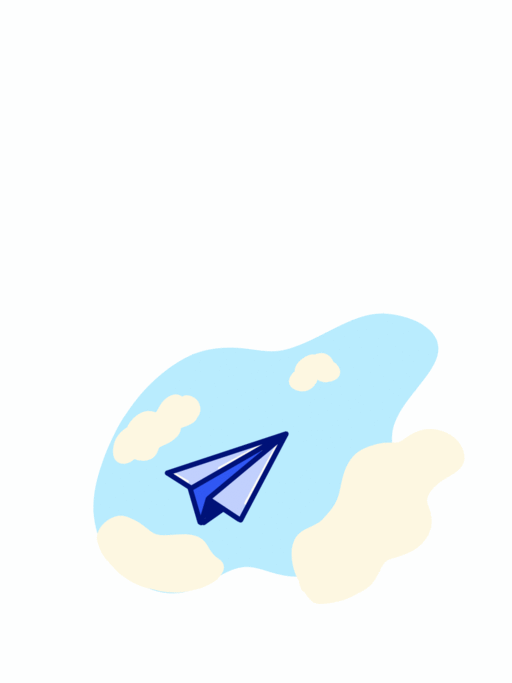

Interaction Design
Redpen
- Area: Interaction
- Year: 2020

Interaction Design


RedPen is the only multi-platform digital service which allows you to correct, prepare and evaluate tasks for primary school teachers and pupils, through the transposition of the school's methods "classic" in digital. The new digital service created to make homework easy for teachers to prepare and fun for children. A platform created for your needs. Choose from hundreds of customizable templates. Fix your tasks easily, fast and intuitive with a click. Follow step by step learning of your pupils and drive them from home.
Team: Elena Buttolo, Caterina Cedone, Francesca Fincato, Marta Monti, Federico Pozzi
Project: Designing a system to aid distance learning in a time of emergency
Area: Interaction